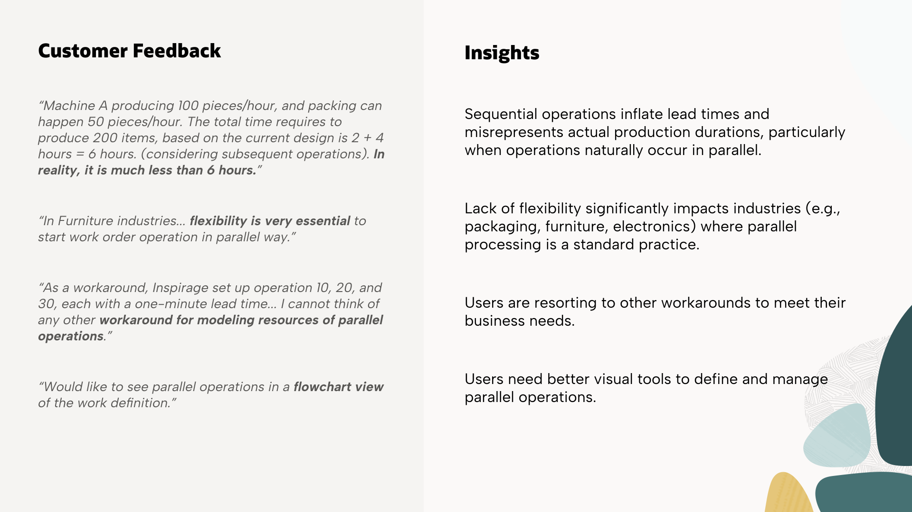

02 — Research
Understanding the Users
I consulted Oracle Cloud Customer Connect for peer feedback and mapped the experience across three distinct user types — each with different needs and contexts around parallel operations.
This wasn't a hypothesis. Manufacturers requested parallel operations as far back as 2018, and again in 2020 — real production lines run steps simultaneously, yet the system forced them into sequential routings. Oracle credits the shipped capability directly to that demand: it ships officially labeled “from a customer submitted idea.” The actual threads, and the insight I pulled from each, are below.

Real requests from Oracle Cloud Customer Connect — peer feedback that surfaced the parallel-operations gap, paired with the insights I pulled from each.

The parallel operations experience spans three roles — from the engineer authoring Finish-to-Start vs. Start-to-Start dependencies, to the supervisor monitoring parallel branches, to the operator who needs the next startable operation surfaced instantly.